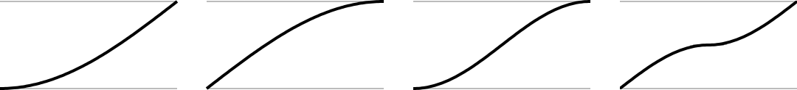
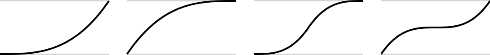

easing.*
Type Library Revision Release 2024.3703 Keywords easing, animation, transition, tween, interpolation See also Transitions (guide)
Overview
Easing functions provide a simple way of interpolating between two values to achieve varied animations. They are used in conjunction with the transition library.
Syntax
transition.to( target, { transition=easing.outExpo } )
transition.from( target, { transition=easing.inOutCirc } )
Easing Functions
easing.linear

easing.continuousLoop

easing.inSine ; easing.outSine ; easing.inOutSine ; easing.outInSine

easing.inQuad ; easing.outQuad ; easing.inOutQuad ; easing.outInQuad

easing.inCubic ; easing.outCubic ; easing.inOutCubic ; easing.outInCubic

easing.inQuart ; easing.outQuart ; easing.inOutQuart ; easing.outInQuart

easing.inQuint ; easing.outQuint ; easing.inOutQuint ; easing.outInQuint

easing.inExpo ; easing.outExpo ; easing.inOutExpo ; easing.outInExpo

easing.inCirc ; easing.outCirc ; easing.inOutCirc ; easing.outInCirc

easing.inBack ; easing.outBack ; easing.inOutBack ; easing.outInBack

easing.inElastic ; easing.outElastic ; easing.inOutElastic ; easing.outInElastic

easing.inBounce ; easing.outBounce ; easing.inOutBounce ; easing.outInBounce

Example
local circle = display.newCircle( 100, 100, 40 )
circle:setFillColor( 0, 0, 1 )
transition.to( circle, { time=400, y=200, transition=easing.inExpo } )
Source
If you want to add, modify or extend functionality, download the source code from GitHub and include in your project(See Using External Modules).